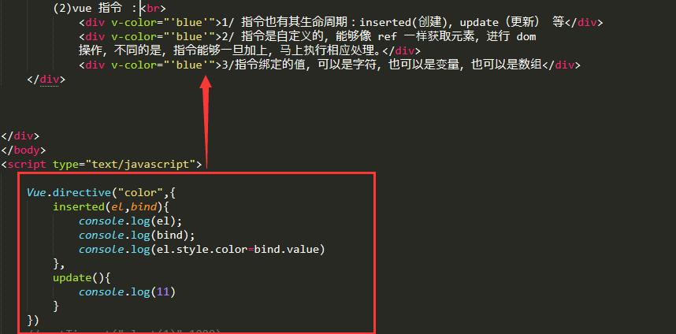

(1)IIFE (Immediately Invoked Function Expression)：
IIFE 立即调用的函数表达式，可以用来模拟块级作用域，防止变量污染通常写法：！function(II){}(I)
作用：创建一个独立的作用域，这个作用域的变量，外面访问不到，避免变量污染

(2)vue 指令 ：
1/ 指令也有其生命周期：inserted(dom创建的时候执行)，update（更新） 等
2/ 指令是自定义的，能够像 ref 一样获取元素，进行 dom 操作，不同的是，指令能够一旦加上，马上执行相应处理。
3/指令绑定的值，可以是字符，也可以是变量，也可以是数组
